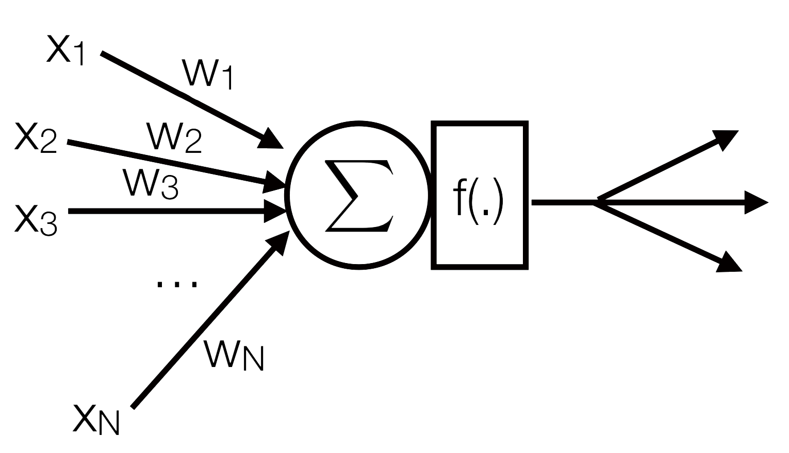
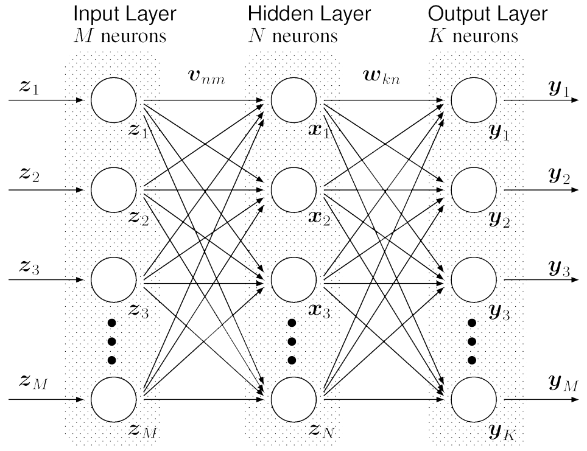

Neural Networks
Sina Sarparast {ss4g17@soton.ac.uk}
Chun Hei Fok {chf1n17@soton.ac.uk}
A Neuron is …

Mimicking a neuron’s function
Multi Layer Perceptron
Input Layer
Input layer simply feeds input to hidden layers.
Output Layer
Has specific number of neurons.
Example: 10 if we have can have 10 different outputs
Hidden Layers
Each neuron in the hidden layer uses a non-linear activation function
Activation Functions
The activation function in a neural network is a function used to transform the activation level of a unit (neuron) into an output signal.
Backpropagation
Backpropagation is a method used in artificial neural networks to calculate the error contribution of each neuron after a batch of data (in image recognition, multiple images) is processed
Neural Network Demo - XOR Gate
Neural Network Demo - XOR Gate
Resources
- https://secure.ecs.soton.ac.uk/notes/comp6229/l7_neuralnetworks.pdf
- https://cs.stanford.edu/people/eroberts/courses/soco/projects/neural-networks/History/history1.html
- https://www.reddit.com/r/explainlikeimfive/comments/7buzbs/eli5_what_are_neural_networks_specifically_rnns/